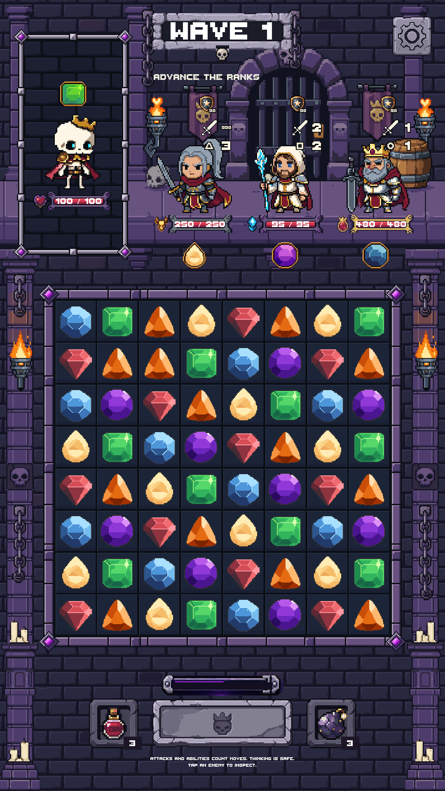
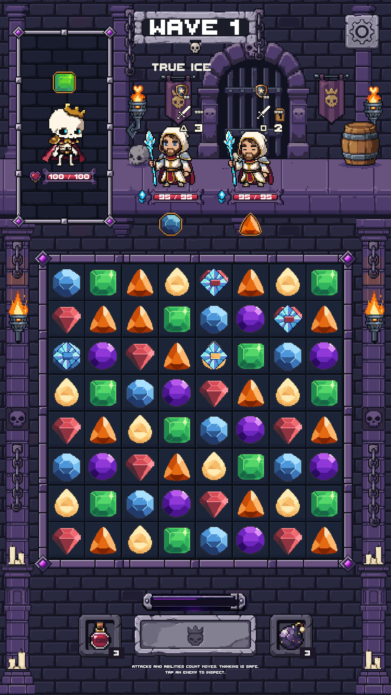
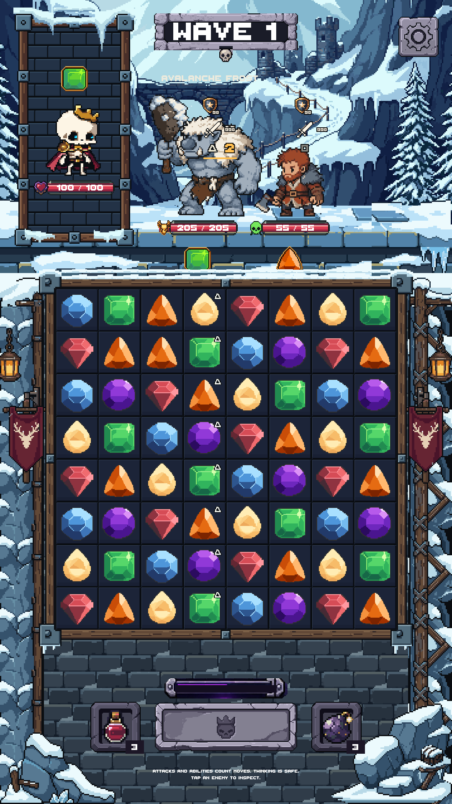
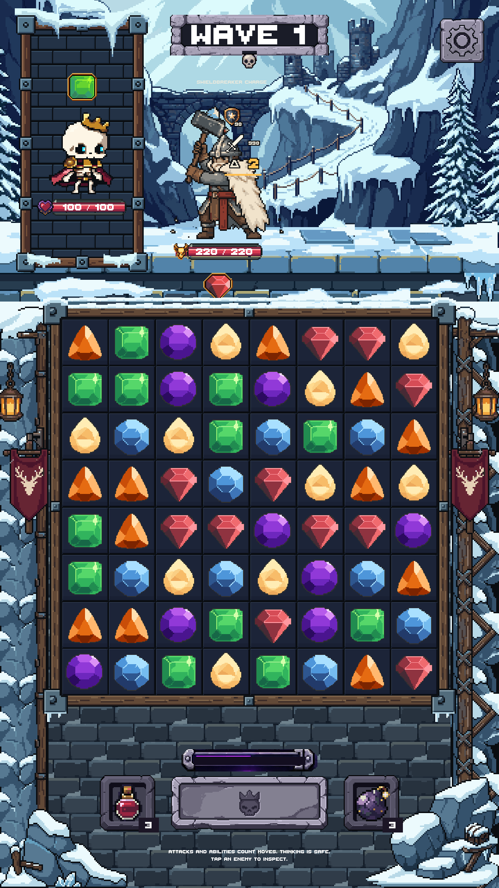
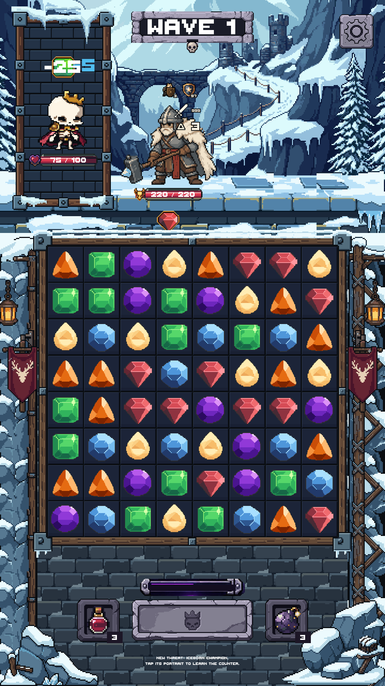
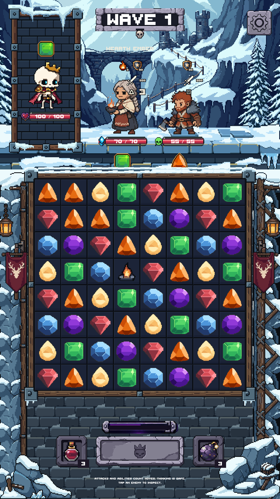
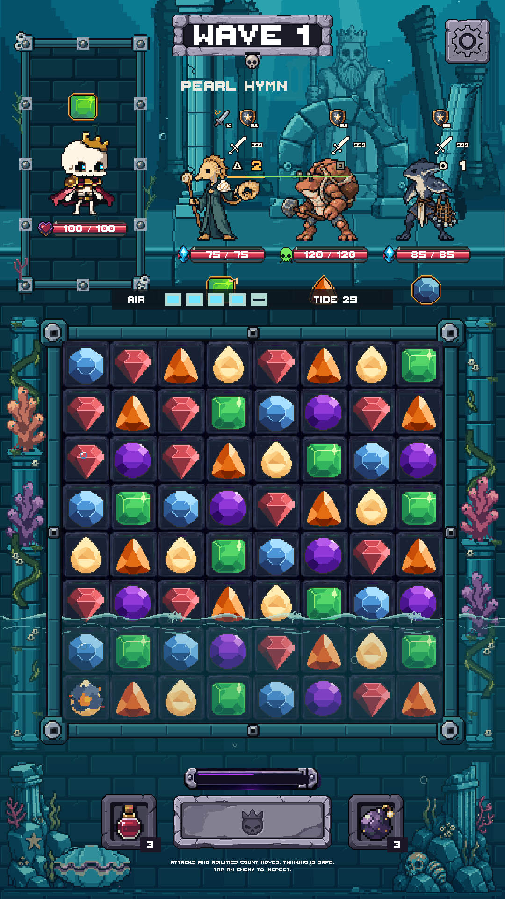
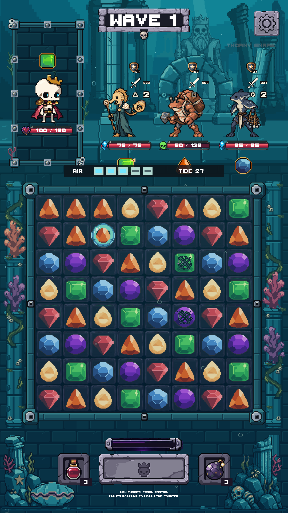
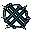

Knight Captain
Chain Volley alternates with readiness advancement for every other living ally. No immediate allied attacks.

Actual Unity Game-scene captures at 1080×1920. Test fixtures isolate ability behavior with controlled readiness, immunity and sometimes health values; those fixture values are not production balance changes. Click a capture for its full resolution.
Verification and tuning notes · Approval and implementation record
Chain Volley alternates with readiness advancement for every other living ally. No immediate allied attacks.

Owned True Ice shares Frostwake's stages and counterplay. Death releases only that Mage's ice.

Two-move column warning. A player clear anywhere in that column cancels; unanswered warnings add at most two Frost encasements.

Two response moves before independent 10/25 base-damage contacts. Stagger or death cancels.

Three accepted recovery moves; normal and special actions remain held until recovery completes.

One one-hit Ember heals its fixed ally 5 HP per future move, up to 15. Destroying it thaws up to two adjacent ice layers.

A flooded channel starts at 20 HP. One collected bubble leaves 10; two leave zero. The pending heal is displayed.

Barbed marine netting replaces the old overlay. Thorny Snare's name, swap restriction, falling attachment, AIR rules and expiry are preserved.


Hand-authored native pixels, LibreSprite sources, binary alpha. No image-generation credits used. Existing character and environment artwork preserved. Not merged.